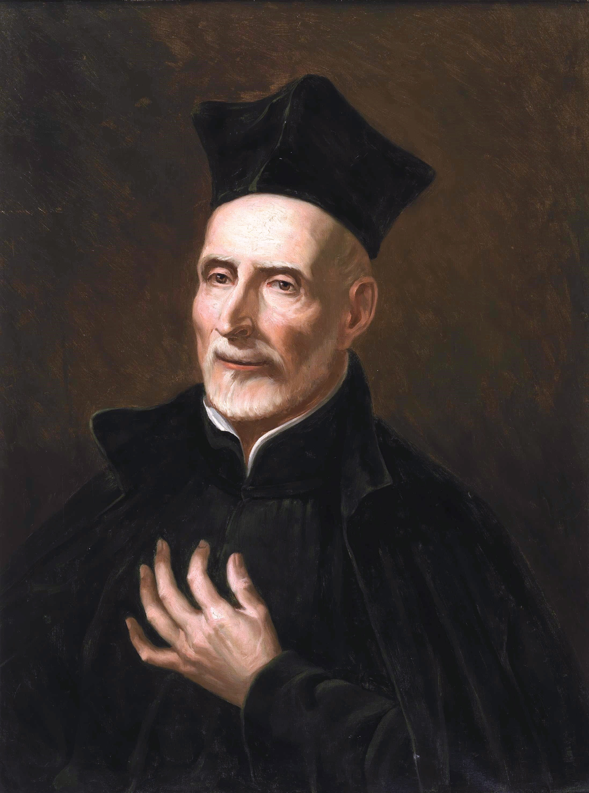

Biografía
San José de Calasanz (1557-1648) fue un sacerdote español, pedagogo y fundador de las Escuelas Pías, una institución dedicada a la educación gratuita de niños pobres. Su obra, que incluye la fundación de la orden de los Escolapios, se extendió por todo el mundo y su festividad se celebra el 25 de agosto.
Frases Célebres
"La buena educación de los jóvenes es, en verdad, el ministerio más digno, el más noble, el de mayor mérito, el más beneficioso, el más útil, el más necesario, el más natural, el más razonable, el más grato, el más atractivo y el más glorioso" y "Procure atraerse a los alumnos, mostrándose más padre suyo que juez riguroso".